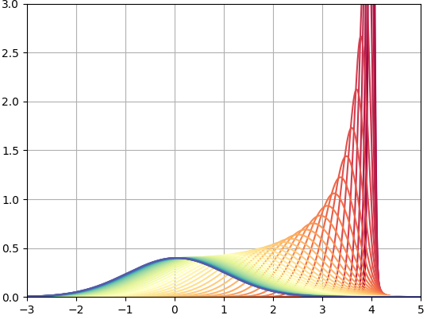

Diffusion Policy Part 1
How does Diffusion Work?
Denoising Diffusion
While working to implement diffusion policies, I tried to first build an understanding of diffusion models on their own. Typically, diffusion is applied to image generation, and the recent landmark work in this area is Denoising Diffusion Probabilistic Models (DDPM). My notes here concentrate on this work exclusively; later posts will shift the focus to policies.
The purpose of a diffusion model is to learn a mapping between two distributions of data: One that is very complex and hard to sample from, but has data of interest (for example, the distribution of all possible 256x256 images of flowers), and a second which is uninteresting but very easy to sample from (for example, a 256x256 normal distribution). If such a mapping can be learned, then we have an easy recipe to sample interesting data: sample a point from the easy, uninteresting dataset, and then map it into the interesting dataset. Here "sampling" is the same as generating. In the flower image example, by following this process and ultimately sampling from the distribution of flower images we have "generated" a flower image.
Our key problem is how to construct this mapping, given that we only have samples of the interesting dataset and not the underlying distribution (which is ultimately what we want to approximate). There are two ways that we can use this mapping: from the interesting data to the easy one (flowers to noise) is called the forward process, and traveling the other way is called the backwards process. Critically, note that what we really want to end up with is the backwards process, from something easy like Gaussian noise back to the original data.
Forward Diffusion
The forward mapping, from rich data to noise, can just be constructed manually. We can take any data point and iteratively add noise to it until it is "just noise". The harder challenge will be learning to undo this noise (next section), the "Denoising" in DDPM.
DDPM constructs a forward diffusion process that takes any datapoint from the target distribution and iteratively deteriorates it into the standard normal distribution using the following algorithm:
Intuitive Forward Diffusion Algorithm
Given a datapoint x
Repeat T times:
Shift: Move x slightly towards zero by multiplying by a constant close to (but less than) one.
Noise: Add noise to x by adding a Gaussian distribution with zero mean and a small variance.
We can define our complete forward process by defining T, the multiplicative factor for step 1, and the variance for step 2. DDPM uses T=1000, and defines a very small variance constant for each of these steps, called beta. Beta increases linearly with T, something like beta=linspace(0.0001, 0.02, T). For step 1, we can reuse beta to define a small number less than one: sqrt(1-beta). This gives the following concrete algorithm:
Forward Diffusion Algorithm
Given a datapoint x and betas β=linspace(0.0001, 0.02, T=1000)
For each β:
Shift: x = x * sqrt(1 - β)
Noise: x = x + Normal(0,β)
We can easily visualize this by starting with some initial distribution and applying the above routine. For one dimension, starting with a single point-mass at x=4 (actually an incredibly tight gaussian distribution to make things simpler):

Here we have plotted every 20th curve in the sequence (starting at red and ending at blue), and we can see that this process converges to the standard normal. We can also do this in two dimensions, which simply does this on two independent axes:
In either case, as soon as we are one step into our sequence, we are dealing with normal distributions rather than points. Here, the circles represent one standard deviation of the current distribution centered at the solid-colored point
Note that the trajectory of the mean is linear (we are just moving it straight towards zero), but the rates of change of the mean and variance are not. Each time the mean is shifted, we are multiplying by the next sqrt(1-β), so we can visualize this movement by plotting the cumulative products of all sqrt(1-β) terms. Meanwhile, the variance of the next distribution is given by existing_variance*(1-β)+β, which we can also plot:
We can also explore the impact of other bounds to beta and number of steps in our schedule:
The parameters given in the DDPM paper (0.0001, 0.02, T=1000) are in blue, and show a smooth interpolation over our 1000 steps. More steps (purple) simply takes longer to converge (which is fine), but fewer steps (red) actually doesn’t make it. Changing the ranges of beta impacts convergence rate. Large betas (green) converge really fast, which may be hard for our model to learn.
We can imagine applying our process to a large number of points such that the entire distribution of our data is shifted towards the standard normal. This is what we really want to do- map our entire dataset to a nice distribution we can sample from. In practice we should zero-center and normalize our data so we are not blasting it across spacetime during the forward process, but that wouldn’t be very exciting to look at visually:
A nice property of this diffusion process is that we can jump to any distribution along our interpolation trajectory (we do not need to solve it iteratively). At some step t <= T, we can clearly find our mean my taking the cumulative product of sqrt(1-β), which is the cumulative effect of all our slight shifts towards zero:
Finding a nice form for the variance is bit tricker, but it turns out that it can be expressed as:
Thus, for any point x, we can jump to a noised version of x that is at some step t between 0 and 1000 by specifying:
For images specifically, the data will not be 1D or 2D, but very highly dimensional (width by height by channels). We can visualize the forward diffusion process applied to an image, in which it starts as a complete image and deteriorates into random noise (here showing every 100th step):
Our Training Objective: Denoising
At the end of the above section, we are able to specify a datapoint at step t in our diffusion process as the original datapoint, scaled, plus some noise. This isolates the noise term, and allows us to compile a dataset of (noised_image, noise, t) tuples. Important note: when multiplying a normal distribution by a constant, the variance is multiplied by the constant squared. Or in this case, to bring our multiplier outside the distribution, we take the square root:
We can then train a neural network to predict the noise that is present in a given image via supervised learning . Given an input of (noised_image, t), we have a training target of (noise,):
Our noisy image x_t is calculated using t and the corresponding beta values:
Finally, our loss is to predict the noise that is present in an input, given the current time t:
Where our model is epsilon parameterized by theta, and epsilon on its own is the true noise. If we can accurately train such a network, we can take any noisy image, predict the noise that is present, and recover the original image. In an extreme case, we could start with pure noise and try to "remove" some predicted noise, leaving behind a pristine image. This is not feasible in practice - we cannot jump straight to a perfect image in one pass - but we can move towards a better image. Iteratively moving from noise towards a clean image is called "sampling", as in "sampling from the distribution represented by our data".
Sampling
To sample from our distribution, we want to follow the diffusion process in reverse. Starting with random noise, we predict the noise that might be present and then shift the datapoint closer to a clean image, one step at a time (i.e. for T=1000, 999, 998, …). Using our diffusion scheduling parameters, we can scale and subtract the noise such that we are walking backwards along the diffusion process:
where first x_t is random noise at T=1000, and the alphas are shorthands:
and we can use, among other options:
Although this equation has a lot going on, most of it is just coefficients that scale things correctly. To make things easier to look at:
where again, our model is epsilon parameterized by theta, taking as input the current noised image and time t, and predicting the currently present noise, which we partially subtract away.
There are a few things to note about this sampling method. Firstly, each update to our datapoint towards a clean generation requires a pass through the network to predict the current noise. This means that generating a datapoint (sampling from our data distribution) requires T=1000 inference passes, which is pretty slow. This is an inconvenience for image generation, and a pretty big drawback for something like diffusion policies which need to command a real time system.
The second thing to note is the added noise at the end. We are both removing and adding noise in this process (hopefully adding less than we are removing)! Intuitively, we are sort of "growing" a generation, and sprinkling some randomness in there helps us slowly converge to something good, much like stochastic gradient descent benefits from randomness.
Improvements
The DDIM paper reformulates DDPM such that we can remove the noise term, and do not need to follow the reverse process one step at a time. Instead, we can make jumps of several steps which greatly speeds up our generation. A major practical advantage is that we can reuse the model trained with DDPM:
In an extreme case, the Adversarial Diffusion Distillation (ADD) paper distills the reverse diffusion process into a secondary model, allowing for single-step generation. I have not explored this yet for diffusion policies but it seems like it could unlock significant capabilities for real-time control. ADD seems to be one of the key innovations used a Black Forest Labs, creators of the Flux series of image generation model.
Another way to speed things up is latent diffusion, in which the image is first compressed into a latent vector that is the subject of the diffusion process. A latent representation of the image is generated, and finally a true image is reconstructed from this latent version. If you are dealing with large pieces of data (i.e. an image with lots of pixels), this reduces the size of the data that is flowing through the model.
This ended up being a pretty big post, so will stop here. The next one will examine implementing DDPM for image generation with a U-Net architecture.
References
DDIM Explanation by Tidiane: https://www.youtube.com/watch?v=IVcl0bW3C70
Diffusion vs Autoregression by Algorithmic Simplicity: https://www.youtube.com/watch?v=zc5NTeJbk-k
Recent Posts:
GAIL with Pixels Only
Rewarding for Visual Fidelity
May 16, 2025
GAIL
Rewarding for Fidelity
April 29, 2025
MuJoCo Cronenbergs
(Mis)Adventures in Style Transfer, Part 2
February 10, 2025
More Posts